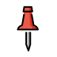
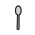

Pick the clip that sounds like the pure sound a teacher would say (no "uh" after t or p).
| a | a-commons-0 | CC BY-SA 3.0 — No machine-readable author provided. Denelson83 assumed (based on copyright claims). | |
| a | a-commons-trim | CC BY-SA 3.0 — No machine-readable author provided. Denelson83 assumed (based on copyright claims). | |
| a | a-piper-0 | Piper TTS, LJSpeech voice (public domain) | |
| a | a-piper-1 | Piper TTS, LJSpeech voice (public domain) | |
| a | a-piper-slow | Piper TTS, LJSpeech voice (public domain) | |
| i | i-commons-0 | CC BY-SA 3.0 — No machine-readable author provided. Denelson83 assumed (based on copyright claims). | |
| i | i-commons-trim | CC BY-SA 3.0 — No machine-readable author provided. Denelson83 assumed (based on copyright claims). | |
| i | i-piper-0 | Piper TTS, LJSpeech voice (public domain) | |
| i | i-piper-1 | Piper TTS, LJSpeech voice (public domain) | |
| i | i-piper-slow | Piper TTS, LJSpeech voice (public domain) | |
| n | n-commons-0 | CC BY-SA 3.0 — unknown | |
| n | n-commons-trim | CC BY-SA 3.0 — unknown | |
| n | n-piper-0 | Piper TTS, LJSpeech voice (public domain) | |
| n | n-piper-1 | Piper TTS, LJSpeech voice (public domain) | |
| n | n-piper-slow | Piper TTS, LJSpeech voice (public domain) | |
| p | p-commons-0 | CC BY-SA 3.0 — unknown | |
| p | p-commons-trim | CC BY-SA 3.0 — unknown | |
| p | p-piper-0 | Piper TTS, LJSpeech voice (public domain) | |
| p | p-piper-1 | Piper TTS, LJSpeech voice (public domain) | |
| s | s-commons-0 | CC BY-SA 3.0 — Peter Isotalo | |
| s | s-commons-trim | CC BY-SA 3.0 — Peter Isotalo | |
| s | s-piper-0 | Piper TTS, LJSpeech voice (public domain) | |
| s | s-piper-1 | Piper TTS, LJSpeech voice (public domain) | |
| s | s-piper-slow | Piper TTS, LJSpeech voice (public domain) | |
| t | t-commons-0 | CC BY-SA 3.0 — unknown | |
| t | t-commons-trim | CC BY-SA 3.0 — unknown | |
| t | t-piper-0 | Piper TTS, LJSpeech voice (public domain) | |
| t | t-piper-1 | Piper TTS, LJSpeech voice (public domain) |


| prompt/which_starts_with | |
| prompt/find_the_letter | |
| prompt/tap_each_letter | |
| prompt/great_job_3 | |
| letter/a | |
| word/sip | |
| word/nap | |
| word/tin |